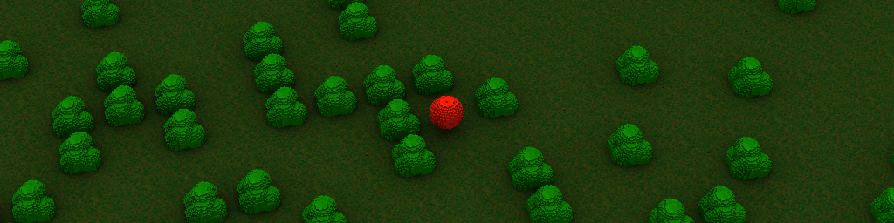

Intro
Solid Engine is a game and application engine with the ambition of making it as easy as possible to render solid objects, as voxels. The most unique part of the engine is a ray tracing renderer, that completely forgoes the classic rasterization pipeline, in favor of path tracing, which naturally provides many desirable qualities, such as realistic lighting and logarithmic time complexity with respect to scene complexity.